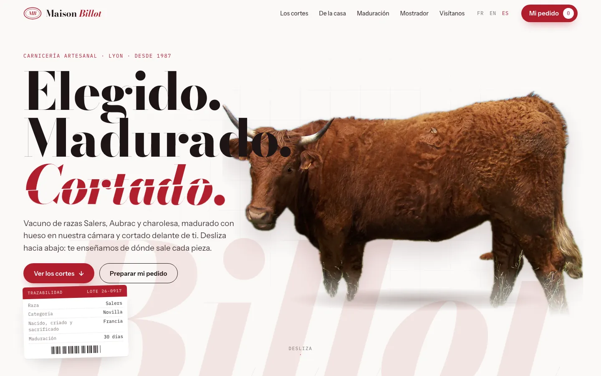
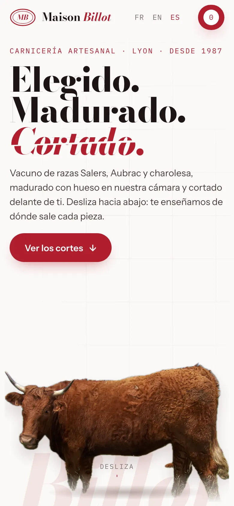

Maison Billot
El despiece del vacuno explicado pieza a pieza: al desplazarte, el animal se divide en 23 piezas fotografiadas, cada una unida a su zona.
- Anatomía al desplazarse: 23 zonas y sus piezas
- Guía «¿Qué vas a cocinar?»: barbacoa, cocido, tartar
- Merguez en vista despiezada y cámara de maduración interactiva
- Pedidos para recoger, con pago en la tienda


Vídeo promocional · 60 s
YouTube, Facebook en ordenador, webs